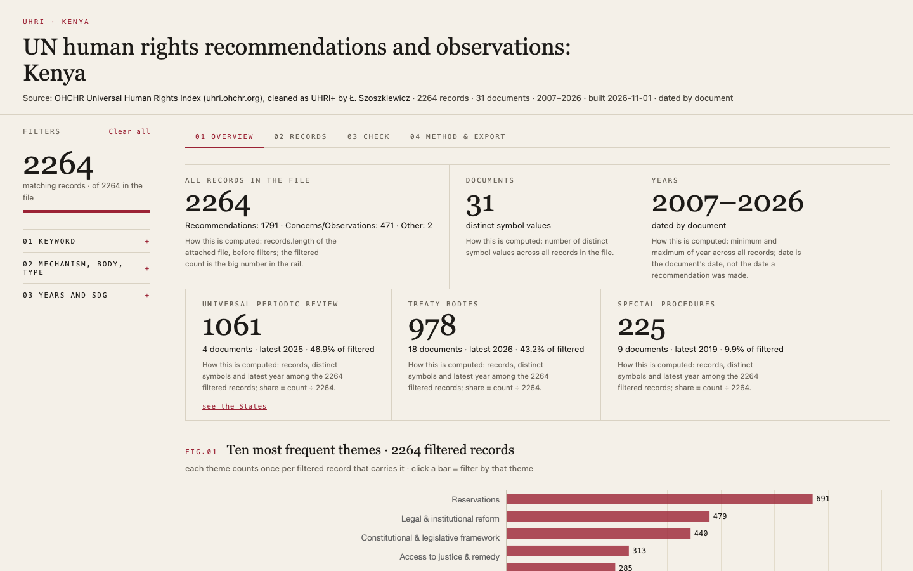
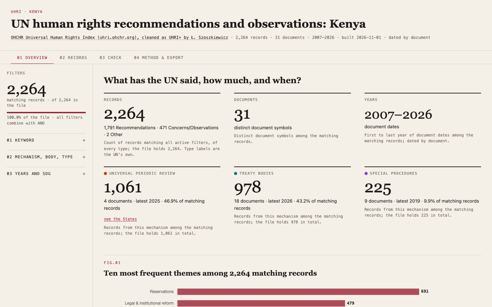
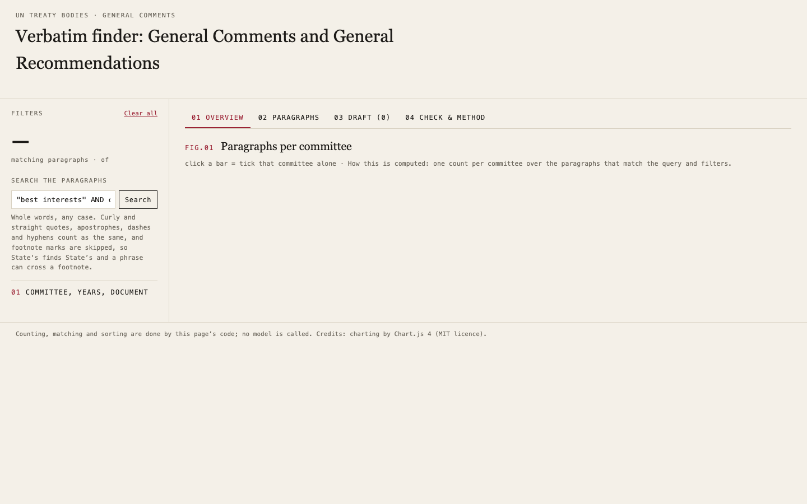
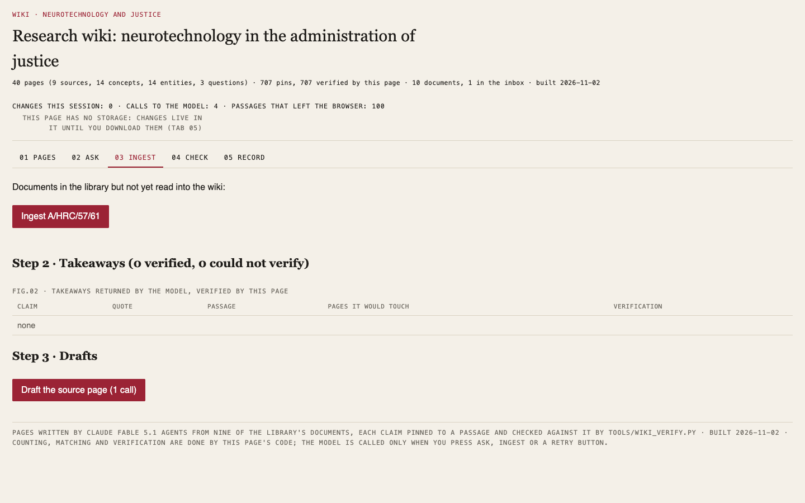
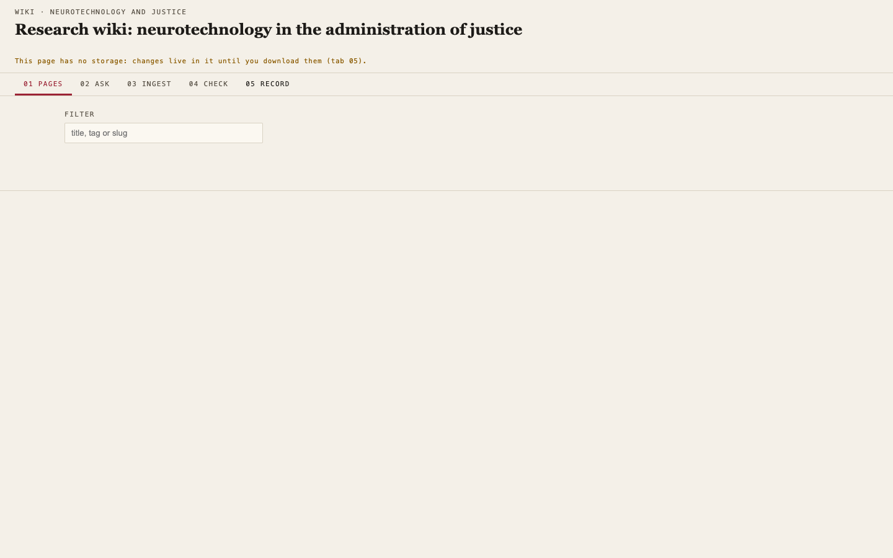

8/8 · 462.6 s · $0.146 · 722 lines
all checks passed

8/8 · 854.7 s · $0.301 · 1139 lines
all checks passed

0/7 · 558.3 s · $0.162 · 0 lines
no_console_errors, no_network, uses_workshop_data, table_min_rows, text_contains, download, text_matches

0/7 · 1026.9 s · $0.308 · 0 lines
no_console_errors, no_network, uses_workshop_data, table_min_rows, text_contains, download, text_matches

5/8 · 486.1 s · $0.142 · 779 lines
no_console_errors, text_contains_after_search, button_matches

0/8 · 1003.6 s · $0.307 · 0 lines
no_console_errors, no_network, uses_workshop_data, chart, search_box, button_matches, source_matches, text_contains_after_search

7/7 · 397.3 s · $0.148 · 978 lines
all checks passed

4/7 · 719.0 s · $0.244 · 1145 lines
no_console_errors, calls_studio_ask, batches_max